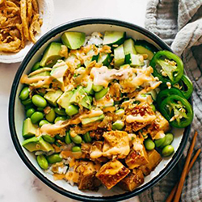
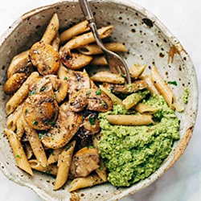
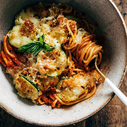

Dinner recipes
"What's for dinner?" Gah! That question! Whether it's coming from your own tired brain or a family full of hungry askers, let's help you get that question answered!
01. Crunchy Roll Bowls
A block of tofu, nicely browned in teriyaki sauce, served on a bed of sticky rice with edamame, cucumber, avocado, jalapeno, and a handful of crushed-up crunchy onions, buried under a thick drizzle of extra teriyaki and spicy mayo.
Click here for the recipe02. Simple Mushroom Penne with Walnut Pesto
Simple Mushroom Penne with Walnut Pesto - made with easy ingredients like Parmesan cheese, whole wheat penne, mushrooms, garlic, and butter. Vegetarian.
Click here for the recipe03. Spaghetti with Crispy Zucchini
This Spaghetti with Crispy Zucchini is the perfect end-of-summer song! It doesn't get much better than fresh summer zucchini coated in a crispy, cheesy breading piled high on top of spaghetti with fresh herbs. YUM!
Click here for the recipe